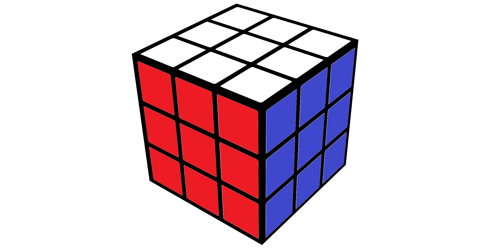
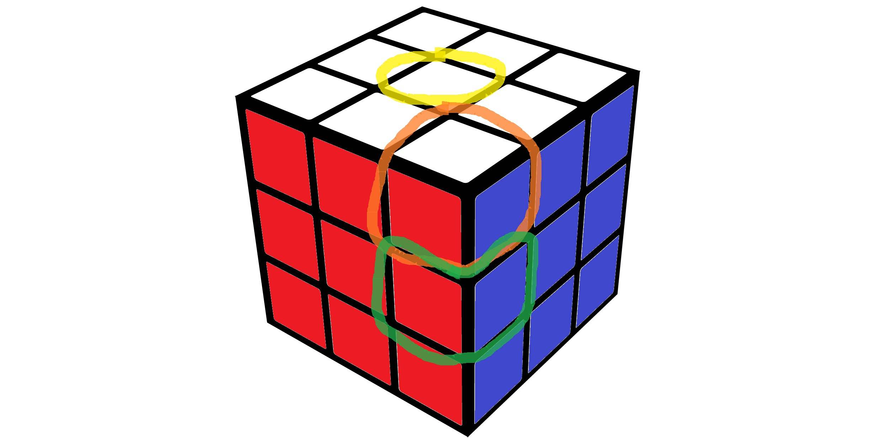
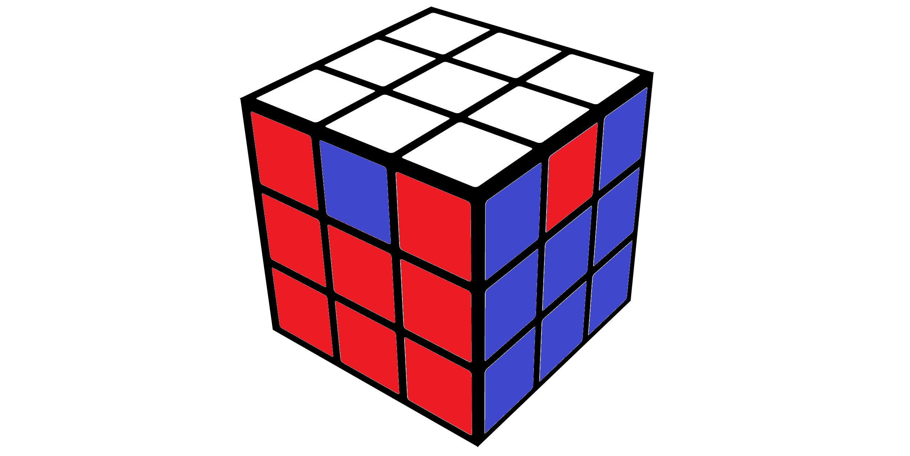

Introduction

The Rubik’s cube is one of the most iconic puzzles ever created. Invented by Ernő Rubik in 1974, its design is deceptively simple, but its solution not so much. Spend even a few minutes with a scrambled cube, and it can start to feel impossible to solve.
Despite this, there exists a global speedsolving community, where solving the cube is often done in mere seconds. As of now, the world record sits at 2.76 seconds. But this post is not about solving the cube. Instead, we ask a different question:
How many different configurations of a Rubik’s cube are there?
Starting Off Simple
A Rubik’s cube has 6 faces, each divided into a 3×3 grid, giving a total of 54 visible squares (stickers). If we ignore all structure and simply assign one of 6 colors to each sticker independently, then the total number of possible colorings is: $6^{54}$ This number is astronomically large... literally. However, this wildly overcounts.
Respecting the Color Inventory
Our previous counting strategy allowed for a case where all 54 stickers are white, amongst other unrealistic possibilities.
A real Rubik's cube has its 54 stickers divided among 9 white, 9 yellow, 9 blue, 9 green, 9 orange, and 9 red stickers. So we have 6 groups of 9 stickers to distribute across 54 possible positions, yielding: $\frac{54!}{(9!)^6}$
This is a huge improvement, but it is still incorrect. This count allows for improper pieces to be generated.
Introducing Cubies (The Real Structure)
A Rubik's Cube is comprised of 6 center pieces (outlined in yellow), 12 edge pieces (outlined in green), and 8 corner pieces (outlined in orange). These smaller pieces are called cubies.

When a cube is scrambled, the centers remain fixed with respect to each other. Consequently, we only need to track how the corners and edges are able to move.
The 8 corner pieces can be permuted in $8!$ ways, and at each position it can be rotated to 3 distinct orientations. Hence we have $8! \times 3^8$ ways to permute and orient the corners.
Similarly, the 12 edges can be permuted to the 12 different positions, and at each position be oriented in 2 ways. Thus, we have $12! \times 2^{12}$ ways to permute and orient the edges.
Our resulting count is then: $8! \times 3^8 \times 12! \times 2^{12}$. This count eliminates impossible piece types such as a white-white-red corner piece.
Physical Constraints of the Cube
Not every arrangement of cubies is a valid position obtainable from scrambling the cube. For example:

If 7 of our corners are oriented arbitrarily, the orientation of the 8th is forced. So instead of $3^8$ corner orientations, we have $3^7$.
Similarly, the orientations of the 11 edges force the orientation of the last one. So instead of $2^{12}$ edge orientations, we have $2^{11}$
The last restriction is something called "parity", the details of which are difficult to describe. The result on our count is that the possible permutations is halved.
Thus, the total number of possible cube positions is: $\frac{8! \times 3^7 \times 12! \times 2^{11}}{2} = 8! \times 3^7 \times 12! \times 2^{10} = 43,252,003,274,489,856,000$
This is the famous answer: 43 quintillion possible cube scrambles. To put this number into perspective: if you stacked 43 quintillion sheets of paper on top of each other, the stack would be tall enough to reach the Sun 58,000 times over.
Despite such an absurd number of possible positions, every single one of them is solvable algorithmically. This reinforces broader concept that resonates with me: the utility of breaking complex problems into smaller, more digestible steps.